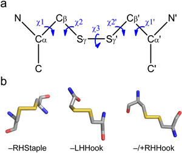

| What are disulfide bonds |
| Protein disulfide bonds are the links between the sulfur atoms of two cysteine amino acids. This motif is also called a cystine residue. |
| Where they form |
Disulfide bonds are formed in proteins as they mature in the cell. This maturation occurs in the endoplasmic reticulum, Golgi complexes and mitochondrial inter-membrane space in eukaryotic cells, and in the periplasmic space in bacteria. The formation of disulfide bonds is assisted by a class of enzymes known as oxidoreductases. |
| Their evolution and abundance |
| Disulfide bonds have accrued during the evolution of eukaryotic proteins and once acquired they have been rarely lost [1]. These bonds have been acquired faster in multicellular organisms, which perhaps reflects demand for more sophisticated protein function in complex organisms. The tertiary structures or partial tertiary structures of 4,104 human proteins are currently known or inferred from a homologous protein/domain and these contain 16,538 disulfide bonds (UniProt annotation, December 2013). About half the disulfide bonds (7,264) are in membrane proteins (1,987) and most of the rest (8,424) are in proteins containing a secretion signal sequence (1,204). Interestingly, 587 proteins that reside in the cytoplasm or nucleoplasm contain 935 disulfide bonds, which are environments traditionally thought not to be conducive to disulfide bond formation.
|
| Posttranslational control of protein function by disulfide bond cleavage |
| Most proteins in nature are chemically modified after they are made to control how, when and where they function. The three core features of proteins are post-translationally modified: amino acid side chains can be covalently modified (type 1), peptide bonds can be hydrolytically cleaved or isomerize (type 2), and disulfide bonds can be reductively cleaved (type 3). Most disulfide bonds, like most peptide bonds, perform a structural role. They stabilize the mature protein structure and remain unchanged for the life of the protein. However, some of the disulfide bonds, the allosteric disulfides, control the function of the mature protein in which they reside when they are cleaved.
|
| Allosteric disulfide bonds |
| Allosteric control is defined as a change in one site, the allosteric site, that influences another site by exploiting the protein's flexibility [2]. Thus, cleavage of an allosteric disulfide bond results in a functional change at another site in the protein. Changes in ligand binding, substrate hydrolysis, proteolysis, or oligomer formation have been identified (reviewed in [3-6]). The allosteric disulfide bonds are reduced by the catalytic disulfides of oxidoreductases or by thiol–disulfide exchange.
|
| Allosteric disulfide bond signatures |
| Allosteric disulfides are being identified using bioinformatics and experimental screens. The bioinformatic technique relies on high-resolution three-dimensional protein structures and a dataset of allosteric disulfides from which common features can be derived. The most informative disulfide bond measure at this time is the configuration of the cystine residue. The geometry of cystine is defined by five dihedral or chi angles, which are calculated by the rotation around the bonds linking the six atoms (see figure at right). There are 20 possible different cystine configurations and all the types have been identified in protein crystal structures [7, 8]. Of the 20 different configurations, the –RHStaple, –LHHook and –/+RHHook bonds are emerging as allosteric configurations (reviewed in [3-5]). The –RHStaple and –/+RHHook bonds are more stressed than other disulfides, which is predicted to facilitate their cleavage [9].
|
| References |
- Wong JW, Ho SY, Hogg PJ: Disulfide bond acquisition through eukaryotic protein evolution. Mol Biol Evol 2011, 28(1):327-334.
- Monod J, Wyman J, Changeux JP: On the nature of allosteric transitions: a plausible model. J Mol Biol 1965, 12:88-118.
- Butera D, Cook KM, Chiu J, Wong JW, Hogg PJ: Control of blood proteins by functional disulfide bonds. Blood 2014, 123(13):2000-2007.
- Hogg PJ: Targeting allosteric disulphide bonds in cancer. Nat Rev Cancer 2013, 13(6):425-431.
- Cook KM, Hogg PJ: Post-translational control of protein function by disulfide bond cleavage. Antioxid Redox Sign 2013, 18(15):1987-2015.
- Hogg PJ: Disulfide bonds as switches for protein function. Trends Biochem Sci 2003, 28(4):210-214.
- Schmidt B, Ho L, Hogg PJ: Allosteric disulfide bonds. Biochemistry 2006, 45(24):7429-7433.
- Schmidt B, Hogg PJ: Search for allosteric disulfide bonds in NMR structures. BMC Struct Biol 2007, 7:49.
- Zhou B, Baldus IB, Li W, Edwards SA, Gräter F: Identification of allosteric disulfides from prestress analysis. Biophys J 2014, 107(3):672-681.
- Wong JW, Hogg PJ: Analysis of disulfide bonds in protein structures. J Thromb Haemost 2010, 8:2345.
|
|
Prof. Philip Hogg
T +61 (2) 8627 4716
E phil.hogg@sydney.edu.au

Figure 1. Disulfide bond configuration.
A.
Classification of disulfide bonds based on their geometry. The geometry is defined by the five bond angles (χ angles) linking the two α-carbons of the cystine residue. Cα denotes the main chain carbon atom and Cß the side chain carbon atom of each cysteine residue. The χ angles are recorded as being either positive or negative. The three basic types of bond configurations (Spirals, Hooks and Staples) are based on the signs of the central three angles, and they can be either right-handed (RH) or left-handed (LH) depending on whether the sign of the χ3 angle is positive or negative, respectively. These six bond types expand to 20 when the χ1 and χ1' angles are taken into account. B. Examples of the structures of the emerging allosteric configurations: –RHStaple, –LHHook and –/+RHHook.
|